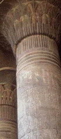
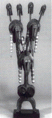
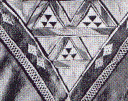
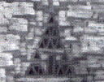
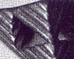

|  |  | |
| An Egyptian column | A Bamana headdress |
|  |  |  |
| Tuareg leatherwork: the basic shape is made of 6 copies each shrunk
by |
Mauritanian stonework, roughly similar to the Tuareg pattern, but the whole pattern is closer to the standard gasket. | Work from Ghana. Not enough levels to be called fractal. |